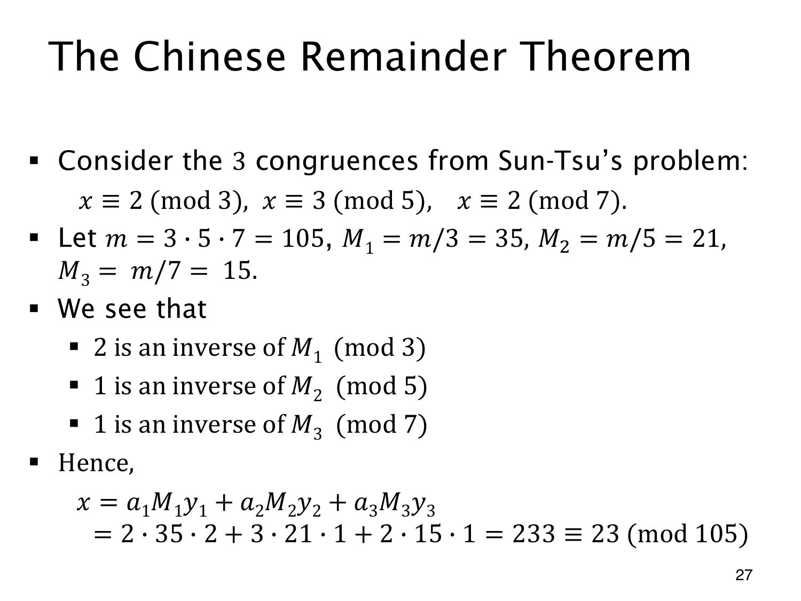

L1.13 · 第 27 页讲解原文
查看这一页课件

将三个余数一次组合起来
孙子问题要求 x≡2(mod3)、x≡3(mod5)、x≡2(mod7)。三个模数两两互素，故可用构造公式，乘积为 M=105。
去掉各自的模数，得到 M1=35,M2=21,M3=15。35≡2(mod3)，其逆元为 2；21≡1(mod5)、15≡1(mod7)，逆元都为 1。所以
x=2⋅35⋅2+3⋅21⋅1+2⋅15⋅1=140+63+30=233.
233mod105=23，完整答案为 x≡23(mod105)，即 x=23+105k，k∈Z。
各项的分工也能逐项检查：模 3 时，63,30 都余零，只剩 140 余 2；模 5 时只留下 63 的余数 3；模 7 时只留下 30 的余数 2。
逐次代入是一步步合并条件，这个公式则一次组合全部条件，模数较多时也可沿同样方式计算。